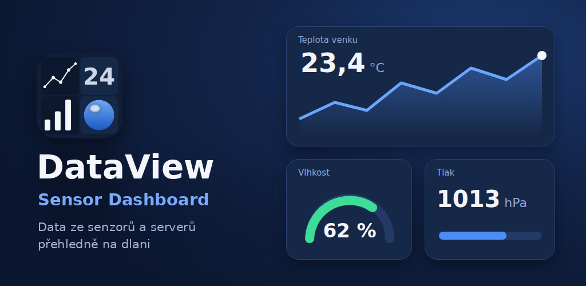
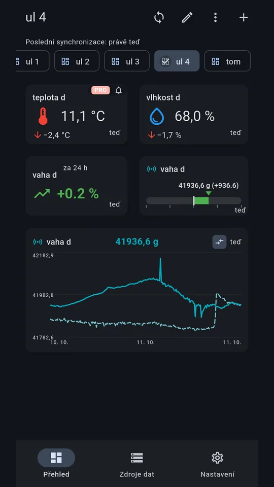
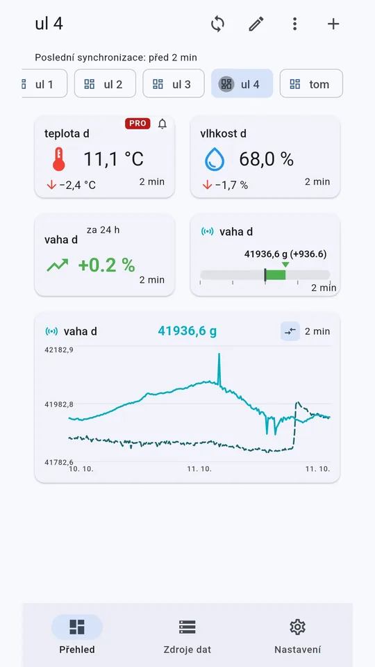
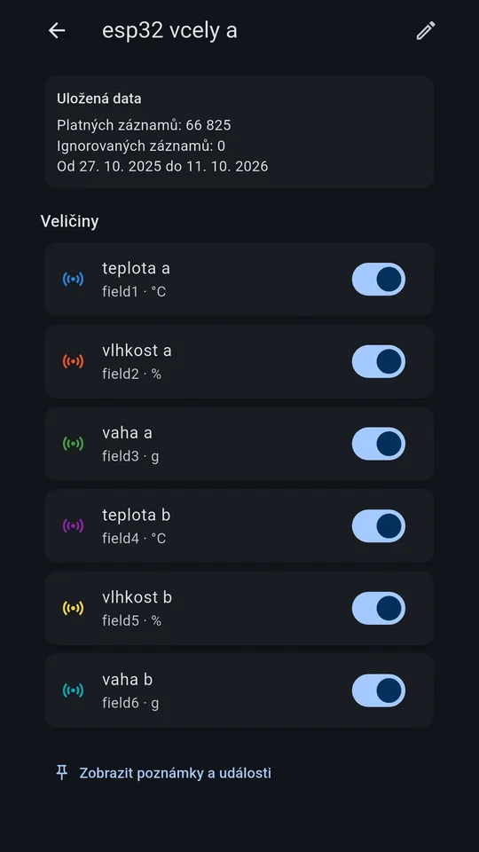
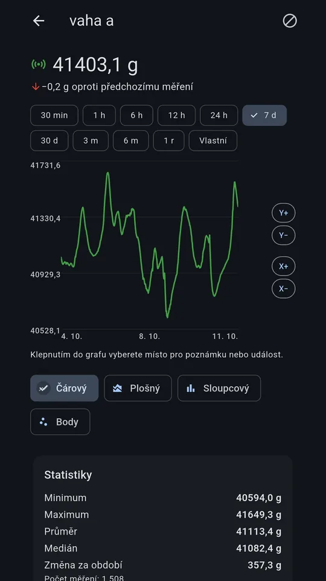
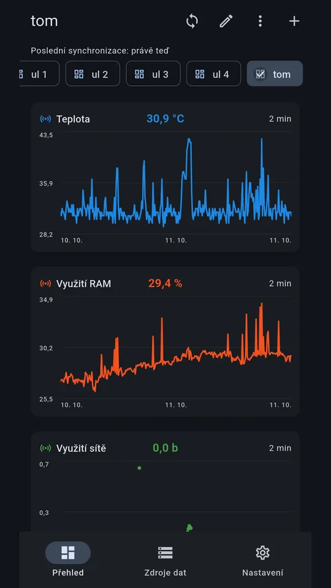
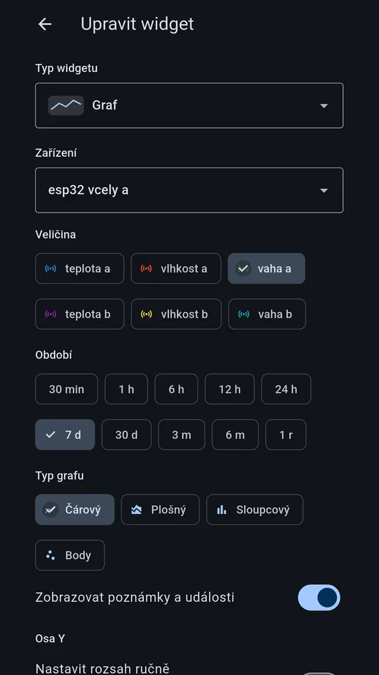

DataView – Sensor Dashboard
Android aplikace, která z vašich senzorů dělá přehledný dashboard: grafy, aktuální hodnoty a upozornění na jednom místě.
An Android app that turns your sensor data into a clear dashboard: charts, current values and alerts in one place.
Stáhnout na Google PlayGet it on Google Play Přejít na návodGo to the guideCo aplikace umí
What the app does
Přehled zařízení
Device overview
Zdroje, zařízení a veličiny na jednom místě – ThingSpeak, MQTT i vlastní REST API.
Sources, devices and quantities in one place – ThingSpeak, MQTT and custom REST API.
Detail veličiny
Quantity detail
Graf průběhu, aktuální hodnota a historie měření.
Chart of the trend, current value and measurement history.
Vlastní dashboard
Custom dashboard
Skládejte widgety (grafy a další) podle sebe pomocí editoru.
Build your own layout from widgets (charts and more) using the editor.
Ovládání
Control
Posuvník, tlačítka, potenciometr či RGB barva odešlou hodnotu do ThingSpeaku nebo MQTT.
A slider, buttons, knob or RGB colour sends a value to ThingSpeak or MQTT.
Alarmy
Alarms
Upozornění, když hodnota překročí nastavenou mez.
Get notified when a value crosses a limit you set.
Světlý a tmavý režim
Light and dark theme
Vzhled Material 3, který respektuje nastavení telefonu.
Material 3 design that follows your phone settings.
Více jazyků
Multiple languages
Čeština, slovenština, němčina a angličtina.
Czech, Slovak, German and English.
Snímky obrazovky
Screenshots






Snímky obsahují ukázková testovací data.
Screenshots contain sample test data.
Návod k použití
User guide
1. Začínáme a základní pojmy1. Getting started and key terms
Jak je aplikace uspořádaná
Dole na obrazovce jsou tři záložky:
- Přehled – vaše nástěnky (přehledy) složené z widgetů. Tady data sledujete.
- Zdroje dat – odkud se data berou: zdroje, jejich zařízení a veličiny. Tady data připojujete.
- Nastavení – vzhled, jazyk, synchronizace, PRO, soukromí.
Základní pojmy
- Zdroj dat – server, odkud se data stahují (ThingSpeak, MQTT broker nebo vlastní REST API).
- Zařízení – například jeden váš senzor nebo kanál; patří do zdroje.
- Veličina – jedna měřená hodnota zařízení (teplota, vlhkost, hmotnost…).
- Přehled – jedna nástěnka. Můžete jich mít víc (např. „Včely“, „Zahrada“).
- Widget – karta na přehledu, která ukazuje veličinu (hodnotu, graf, měřidlo…).
Cesta dat tedy je: zdroj → zařízení → veličina → widget na přehledu.
První kroky
- Při prvním spuštění vyberte jazyk. Může se zobrazit i okno se souhlasem k reklamám a dotaz na anonymní statistiky – odpovězte podle svého uvážení (viz kapitola 6).
- V záložce Zdroje dat přidejte první zdroj (kapitola 2).
- V záložce Přehled vytvořte přehled a přidejte widgety (kapitola 3).
How the app is organised
There are three tabs at the bottom of the screen:
- Overview – your boards (dashboards) built from widgets. This is where you watch your data.
- Data sources – where the data comes from: sources, their devices and quantities. This is where you connect data.
- Settings – look, language, synchronisation, PRO, privacy.
Key terms
- Data source – the server the data is downloaded from (ThingSpeak, an MQTT broker or a custom REST API).
- Device – e.g. one of your sensors or channels; it belongs to a source.
- Quantity – one measured value of a device (temperature, humidity, weight…).
- Dashboard (“Přehled” in Czech) – one board. You can have several (e.g. “Bees”, “Garden”).
- Widget – a card on a dashboard that shows a quantity (value, chart, gauge…).
So the data flows: source → device → quantity → widget on a dashboard.
First steps
- On first launch pick your language. A consent dialog for ads and a question about anonymous statistics may also appear – answer as you prefer (see chapter 6).
- In the Data sources tab add your first source (chapter 2).
- In the Overview tab create a dashboard and add widgets (chapter 3).
2. Záložka Zdroje dat2. The Data sources tab
Přidání zdroje
- Otevřete záložku Zdroje dat a klepněte na + (nebo „Přidat zdroj“).
- Typ zdroje: ThingSpeak (veřejný nebo soukromý kanál), MQTT (zařízení posílající data přes broker) nebo Vlastní REST API.
- Připojení: u ThingSpeaku zadejte ID kanálu a u soukromého kanálu i Read API Key (najdete ho na webu ThingSpeak v nastavení kanálu, sekce API Keys). Klepnutím na „Otestovat připojení“ ověříte, že to funguje.
- Zaškrtněte veličiny, které chcete sledovat, a případně upravte jejich název a jednotku.
- Pojmenujte zařízení, zvolte, kolik historie stáhnout (7 dní, 30 dní, 6 měsíců, rok nebo vše), a klepněte na Uložit a stáhnout data.
Správa zdrojů a zařízení
- V seznamu vidíte zdroje a jejich zařízení. Klepnutím na zařízení otevřete jeho detail zařízení: seznam veličin (každou lze zapnout/vypnout), přejmenování zařízení, nastavení veličiny (např. počet desetinných míst) a údaje o uložených datech.
- Synchronizovat – ikona synchronizace stáhne nová data.
- Dostáhnout starší data – doplní historii starší než nejstarší záznam, který už máte.
- Odebrat zdroj – smaže zdroj včetně zařízení, uložených měření a poznámek. Akci nelze vrátit zpět.
Adding a source
- Open the Data sources tab and tap + (or “Add source”).
- Source type: ThingSpeak (public or private channel), MQTT (devices sending data through a broker) or Custom REST API.
- Connection: for ThingSpeak enter the channel ID, and for a private channel also the Read API Key (find it on the ThingSpeak website in the channel settings, API Keys section). Tap “Test connection” to check it works.
- Tick the quantities you want to follow and adjust their names and units if needed.
- Name the device, choose how much history to download (7 days, 30 days, 6 months, 1 year or everything) and tap Save and download data.
Managing sources and devices
- The list shows your sources and their devices. Tap a device to open its device detail: the list of quantities (each can be switched on/off), renaming the device, quantity settings (e.g. number of decimals) and information about stored data.
- Synchronise – the sync icon downloads new data.
- Download older data – fills in history older than the oldest record you already have.
- Remove source – deletes the source with its devices, stored measurements and notes. This cannot be undone.
3. Záložka Přehled a widgety3. The Overview tab and widgets
Přehledy (nástěnky)
- Klepnutím na + v horní liště vytvoříte nový přehled. Od druhého přehledu se nahoře zobrazí záložky; mezi přehledy lze přepínat i tažením do strany.
- Ikona ⋮ (Možnosti přehledu) umožňuje přehled přejmenovat, posunout doleva/doprava nebo smazat. Smazáním přehledu se nesmažou uložená měření.
- Ikona synchronizace stáhne nová data; pod lištou vidíte čas poslední synchronizace.
Klepnutí na widget
Když nejste v režimu úprav, klepnutím na widget otevřete detail jeho veličiny (graf, statistiky, poznámky – viz kapitola 4). Widget událostí otevře seznam poznámek a událostí, kombinovaný graf se otevře zvětšený.
Přidání widgetu
- Na přehledu klepněte na ikonu tužky (Upravit přehled) – zapne se režim úprav.
- Klepněte na tlačítko + v pravém dolním rohu.
- V okně „Přidat widget“ zvolte typ widgetu, zařízení a veličinu; podle typu nastavte období, vzhled, šířku (ze 4 sloupců) a výšku.
- Uložte. Režim úprav ukončíte klepnutím na ✓.
Úprava, přesunutí a odebrání widgetu
Zapněte režim úprav (tužka). V něm:
- klepnutím na widget otevřete okno „Upravit widget“ (nastavení typu, veličiny, vzhledu, alarmu),
- šipkami ‹ › v rohu widgetu ho přesunete,
- křížkem × ho odeberete z přehledu (uložená data se tím nezmění).
Typy widgetů
Hodnota, Hodnota + změna, Graf, Statistiky, Porovnání období, Události, Kombinovaný graf, Trendový ukazatel, Mini-trend, Porovnávací sloupce, Tachograf, Progress Bar, Stavová LED, Odchylkový ukazatel, G-metr a Kompasový ukazatel. Kombinovaný graf, Mini-trend a Odchylkový ukazatel patří mezi PRO prvky (kapitola 6) a mají na kartě štítek „PRO“.
Dashboards (boards)
- Tap + in the top bar to create a new dashboard. Tabs appear at the top from the second dashboard on; you can also switch by swiping sideways.
- The ⋮ icon (Dashboard options) lets you rename the dashboard, move it left/right or delete it. Deleting a dashboard does not delete the stored measurements.
- The sync icon downloads new data; below the bar you can see the time of the last synchronisation.
Tapping a widget
When you are not in edit mode, tapping a widget opens the detail of its quantity (chart, statistics, notes – see chapter 4). An Events widget opens the list of notes and events, a combined chart opens enlarged.
Adding a widget
- On the dashboard tap the pencil icon (Edit dashboard) – this turns on edit mode.
- Tap the + button in the bottom-right corner.
- In the “Add widget” window choose the widget type, device and quantity; depending on the type set the period, look, width (out of 4 columns) and height.
- Save. Leave edit mode by tapping ✓.
Editing, moving and removing a widget
Turn on edit mode (pencil). While in it:
- tap a widget to open the “Edit widget” window (type, quantity, look, alarm),
- use the ‹ › arrows in the widget's corner to move it,
- use the × to remove it from the dashboard (stored data is not changed).
Widget types
Value, Value + change, Chart, Statistics, Period comparison, Events, Combined chart, Trend indicator, Sparkline, Comparison bars, Gauge, Progress bar, Status LED, Deviation meter, G-meter and Compass dial. Combined chart, Sparkline and Deviation meter are PRO elements (chapter 6) and carry a “PRO” badge on the card.
4. Detail veličiny (graf)4. Quantity detail (chart)
Detail otevřete klepnutím na widget na přehledu (mimo režim úprav). Najdete v něm:
- graf průběhu s volbou období a osy Y,
- změnu oproti předchozímu měření nebo oproti průměru posledních měření,
- tlačítka předchozí / další bod pro procházení jednotlivých hodnot,
- statistiky období: minimum, maximum, průměr, medián, změna a počet měření,
- porovnání s předchozím obdobím,
- trend (odchylka od průměru předchozího okna) – okno trendu lze přepínat,
- poznámky a události: klepnutím do grafu vyberete místo a přidáte poznámku. Poznámka může platit v jednom okamžiku nebo v časovém rozsahu a pro jednu veličinu nebo celé zařízení.
Ignorování chybných měření
V poznámce lze zvolit „Ignorovat toto měření“ – hodnota se přestane zobrazovat v grafu a nepočítá se do průměrů. Ignorovaná měření najdete přes ikonu v detailu a můžete je kdykoli vrátit zpět.
Open the detail by tapping a widget on the dashboard (outside edit mode). It contains:
- a trend chart with a choice of period and Y axis,
- the change compared with the previous measurement or with the average of the last measurements,
- previous / next point buttons for stepping through individual values,
- statistics for the period: minimum, maximum, average, median, change and number of measurements,
- comparison with the previous period,
- trend (deviation from the average of the preceding window) – the trend window can be switched,
- notes and events: tap the chart to pick a spot and add a note. A note can apply to a single moment or to a time range, and to one quantity or the whole device.
Ignoring bad measurements
In a note you can choose “Ignore this measurement” – the value disappears from the chart and is not counted in averages. Ignored measurements are listed via an icon in the detail and can be restored at any time.
5. Alarmy5. Alarms
Nastavení alarmu
- Zapněte režim úprav (tužka) a klepněte na widget – otevře se „Upravit widget“.
- V sekci Alarm zapněte „Upozornit při překročení rozsahu“.
- Vyplňte minimum a/nebo maximum. Prázdné pole znamená, že v daném směru není omezení.
- Uložte. Povolte oznámení, pokud o to Android požádá.
Když hodnota vypadne z rozsahu, přijde oznámení a okraj widgetu bliká. Na kartě je ikona zvonečku: prázdný = alarm hlídá, plný červený = alarm právě platí. U trendových widgetů hlídá alarm trend (pokles zapisujte se znaménkem mínus, např. minimum -5).
Kontrola na pozadí (experimentální)
V Nastavení lze zapnout „Kontrolovat alarmy i na pozadí“. Aplikace se pak přibližně každých 15 minut pokusí připojit a alarmy zkontrolovat, i když je zavřená. Stojí to baterii a data.
Setting an alarm
- Turn on edit mode (pencil) and tap a widget – “Edit widget” opens.
- In the Alarm section switch on “Notify when out of range”.
- Fill in the minimum and/or maximum. An empty field means no limit in that direction.
- Save. Allow notifications if Android asks.
When the value leaves the range you get a notification and the widget's border blinks. The card shows a bell icon: outlined = the alarm is watching, filled red = the alarm is active right now. On trend widgets the alarm watches the trend (write a drop with a minus sign, e.g. minimum -5).
Background checks (experimental)
In Settings you can switch on “Check alarms in the background”. The app then tries about every 15 minutes to connect and check alarms even when it is closed. This costs battery and data.
6. Reklamy, PRO a souhlas6. Ads, PRO and consent
Jak funguje bezplatná verze
Všechny funkce jsou dostupné zdarma, nic není zamčené. Za bezplatné používání se čas od času zobrazí jedna krátká odměněná reklama („Krátká pauza na reklamu“). Reklama se zobrazí, když:
- uplyne 30 minut aktivního používání (počítá se jen čas, kdy je aplikace otevřená na obrazovce), nebo
- uplyne 7 dní od poslední zhlédnuté reklamy.
Po zhlédnutí reklamy do konce se čas vynuluje a můžete dál používat aplikaci. Když reklamu zavřete předčasně, zobrazí se znovu (nejvýše třikrát). Pokud se reklamu nepodaří zobrazit (nedostupná, chybí internet), počkáte jen 15 sekund.
PRO prvky a zkrácení limitu
PRO prvky jsou: alarm, kombinovaný graf, odchylkový ukazatel a mini-trend. Můžete jich používat libovolný počet – žádný limit na počet neexistuje. Každý použitý PRO prvek ale limit do další reklamy zkracuje:
- o 10 % z 30 minut (tedy o 3 minuty) a zároveň o 10 % ze 7 dní,
- počítá se každý použitý prvek na všech přehledech (např. 3 widgety s alarmem + 2 kombinované grafy = 5 prvků = limit zkrácen o 50 %, tedy na 15 minut),
- limit nikdy neklesne pod 5 minut a pod 1 den – další prvky už jej nezkracují.
Aktuální stav (počet použitých PRO prvků a zbývající volný čas) vidíte v Nastavení v sekci PRO.
PRO verze (jednorázový nákup)
Nákupem PRO v Google Play (jednorázově, bez předplatného) zmizí reklamy i zkracování limitu. Dřívější nákup lze na stejném účtu Google obnovit tlačítkem „Obnovit dřívější nákup“ v Nastavení.
Co když nedám souhlas s reklamami?
- Souhlas se zpracováním údajů pro reklamy (okno Google, zobrazuje se hlavně v EU, EHP a Velké Británii) neomezuje používání žádného prvku aplikace. Všechny funkce fungují dál.
- Pravidla zůstávají stejná: reklama se zobrazí po stejných 30 minutách / 7 dnech. Mění se jen druh reklamy – bez souhlasu je nepersonalizovaná (a méně relevantní).
- Pokud reklamu nelze zobrazit (nedostatek nabídky, chybí internet), stačí 15 sekund počkat.
- Souhlas můžete kdykoli změnit v Nastavení → Možnosti soukromí a reklam (položka se zobrazuje, pokud se na vás vztahuje).
- Souhlas s anonymními statistikami a hlášením chyb je samostatný a také nemá vliv na funkce aplikace.
How the free version works
All features are available for free, nothing is locked. In return, one short rewarded ad is shown from time to time (“Short break for an ad”). It appears when:
- 30 minutes of active use have passed (only time with the app open on screen counts), or
- 7 days have passed since the last ad you watched.
After watching the ad to the end the timer resets and you can keep using the app. If you close the ad early, it is shown again (at most three times). If the ad cannot be shown (unavailable, no internet), you simply wait 15 seconds.
PRO elements and the shorter limit
PRO elements are: alarm, combined chart, deviation meter and sparkline. You can use any number of them – there is no cap on how many. Every PRO element in use, however, shortens the limit until the next ad:
- by 10 % of 30 minutes (i.e. 3 minutes) and also by 10 % of the 7 days,
- each element in use counts across all dashboards (e.g. 3 widgets with an alarm + 2 combined charts = 5 elements = limit shortened by 50 %, i.e. to 15 minutes),
- the limit never drops below 5 minutes and 1 day – further elements no longer shorten it.
The current status (number of PRO elements in use and the remaining free time) is shown in Settings in the PRO section.
PRO version (one-time purchase)
Buying PRO in Google Play (one-time, no subscription) removes the ads and the shortening of the limit. An earlier purchase can be restored on the same Google account with “Restore previous purchase” in Settings.
What if I do not consent to ads?
- Consent to data processing for ads (a Google dialog, shown mainly in the EU, EEA and UK) does not restrict any feature of the app. Everything keeps working.
- The rules stay the same: the ad appears after the same 30 minutes / 7 days. Only the kind of ad changes – without consent it is non-personalised (and less relevant).
- If no ad can be shown (no inventory, no internet), you just wait 15 seconds.
- You can change your choice at any time in Settings → Privacy and ads options (shown if it applies to you).
- Consent to anonymous statistics and crash reports is separate and does not affect the app's features either.
7. Nastavení a soukromí7. Settings and privacy
- Jazyk a motiv: čeština, slovenština, němčina, angličtina; motiv Auto / Světlý / Tmavý.
- Synchronizace: při spuštění, při návratu z pozadí a automaticky každých X minut (jen dokud je aplikace otevřená). Zdroje MQTT se připojují při spuštění vždy.
- Alarmy na pozadí: experimentální volba, viz kapitola 5.
- PRO: stav limitu, nákup a obnovení nákupu.
- Anonymní statistiky a hlášení chyb: dobrovolné, můžete je kdykoli vypnout.
- Úložiště: velikost databáze a počty měření a poznámek. Data jsou uložena v telefonu.
- O aplikaci → Licence: licence použitých knihoven.
- Nápověda: znovu spustí průvodce prvními kroky.
Podrobnosti najdete v zásadách ochrany soukromí.
- Language and theme: Czech, Slovak, German, English; theme Auto / Light / Dark.
- Synchronisation: on launch, on return from the background and automatically every X minutes (only while the app is open). MQTT sources always connect at launch.
- Background alarms: an experimental option, see chapter 5.
- PRO: limit status, purchase and restoring a purchase.
- Anonymous statistics and crash reports: optional, you can switch them off at any time.
- Storage: database size and counts of measurements and notes. Data is stored on your phone.
- About → Licences: licences of the libraries used.
- Help: restarts the first-steps walkthrough.
See the privacy policy for details.
8. Řešení potíží8. Troubleshooting
Nevidím žádná data
- Zkontrolujte připojení k internetu.
- V záložce Zdroje dat ověřte ID kanálu; u soukromého kanálu i Read API Key (zdroj lze otestovat při přidávání).
- Zkontrolujte, že senzor skutečně odesílá data do kanálu (např. na webu ThingSpeak).
- Pokud widget hlásí „Veličina nebyla nastavena“, v režimu úprav na něj klepněte a vyberte veličinu.
Hodnoty jsou staré
Klepněte na ikonu synchronizace. Stáří dat závisí i na tom, jak často senzor odesílá měření. Automatickou synchronizaci nastavíte v Nastavení.
Nepřichází upozornění
Zkontrolujte, že má widget zapnutý alarm a aplikace smí posílat oznámení. Pro kontrolu na pozadí viz kapitola 5 (u některých telefonů ji nelze zaručit).
Nákup PRO se neprojevil
Ověřte, že jste přihlášeni stejným účtem Google, a v Nastavení klepněte na „Obnovit dřívější nákup“.
Nepomohlo? Napište na pallamartas@seznam.cz.
I see no data
- Check your internet connection.
- In the Data sources tab verify the channel ID; for a private channel also the Read API Key (you can test a source while adding it).
- Make sure the sensor is actually sending data to the channel (e.g. on the ThingSpeak website).
- If a widget says the quantity has not been set, turn on edit mode, tap it and choose a quantity.
Values are outdated
Tap the sync icon. Data age also depends on how often the sensor reports. You can set automatic synchronisation in Settings.
No alerts
Check that the widget has its alarm switched on and the app is allowed to send notifications. For background checks see chapter 5 (on some phones they cannot be guaranteed).
PRO purchase not applied
Make sure you are signed in with the same Google account and tap “Restore previous purchase” in Settings.
Still stuck? Write to pallamartas@seznam.cz.
9. Ovládací widgety (odesílání dat)9. Control widgets (sending data)
Ovládací widgety umí z aplikace odeslat hodnotu do ThingSpeaku (zápis do pole kanálu) nebo na MQTT broker (publikace do topicu). Odesílá se jen na váš pokyn – nikdy automaticky.
Příprava zdroje
- ThingSpeak potřebuje Write API Key (jiný než Read API Key). Zadáte ho při přidání zdroje, nebo později v záložce Zdroje dat přes volbu „Zápis“.
- Doporučujeme samostatný kanál či pole jen pro ovládání. Pole musí být zapnuté v nastavení kanálu (Channel Settings). Aplikace posílá vždy jen jedno pole.
- U MQTT zvolíte topic a zda se zpráva uchová (retain).
Přidání widgetu
V záložce Přehled klepněte na + a vyberte „Ovládací widget“. Typy: posuvník, tlačítka, potenciometr a RGB barva (potenciometr a RGB jsou prvky PRO). RGB se odesílá jako jedno číslo 0–16 777 215 (R×65536 + G×256 + B).
Nastavení
- rozsah a krok (posuvník, potenciometr), jednotka; u tlačítek text, hodnota a barva každého tlačítka a počet tlačítek na řádek (1–3),
- potvrzovací dialog před odesláním – ve výchozím stavu zapnutý, při vypnutí aplikace upozorní,
- synchronizace náhledu s hodnotou z kanálu (stejný kanál, nebo jiný) a zobrazení času poslední aktualizace,
- zámek proti nechtěnému ovládání.
Odpočet 15 s
Bezplatný ThingSpeak přijme zápis nejvýše jednou za 15 s. Aplikace proto po odeslání krátce blokuje další odeslání do téhož zdroje. Odpočet lze u zdroje vypnout (Zdroje dat → Zápis).
Když odeslání selže
- Neprovedeno – OFFLINE: bez připojení se nic neodešle. Hodnota se neodkládá a později se neodešle sama; použijte „Zopakovat“.
- Server odeslání odmítl: v závorce je kód odpovědi. Zkontrolujte, že používáte Write (ne Read) API Key, že je pole v kanálu zapnuté a že neodesíláte častěji než za 15 s.
Upozornění: aplikace není určena k ovládání bezpečnostně kritických zařízení. Doručení příkazu nelze zaručit (síť, server, limity služby) a za nastavení a následky ovládání odpovídáte vy.
Control widgets send a value from the app to ThingSpeak (writing to a channel field) or to an MQTT broker (publishing to a topic). Values are sent only when you ask – never automatically.
Preparing the source
- ThingSpeak needs a Write API Key (different from the Read API Key). Enter it when adding the source, or later in the Data sources tab via “Write”.
- We recommend a separate channel or field just for control. The field must be enabled in Channel Settings. The app sends one field at a time.
- For MQTT choose the topic and whether the message is retained.
Adding a widget
In the Overview tab tap + and choose “Control widget”. Types: slider, buttons, potentiometer and RGB colour (potentiometer and RGB are PRO items). RGB is sent as a single number 0–16,777,215 (R×65536 + G×256 + B).
Settings
- range and step (slider, potentiometer), unit; for buttons the label, value and colour of each button and the number of buttons per row (1–3),
- confirmation dialog before sending – on by default; the app warns you when you switch it off,
- preview synchronisation with the channel value (same channel or another) and display of the last update time,
- lock against accidental use.
15-second countdown
Free ThingSpeak accepts a write at most once every 15 seconds, so the app briefly blocks further sending to the same source. You can turn the countdown off per source (Data sources → Write).
When sending fails
- Not done – OFFLINE: without a connection nothing is sent. The value is not queued and will not be sent later on its own; use “Retry”.
- Server rejected the send: the response code is shown in brackets. Check that you use the Write (not Read) API Key, that the field is enabled in the channel and that you are not sending more often than every 15 s.
Notice: the app is not intended for controlling safety-critical devices. Delivery of a command cannot be guaranteed (network, server, service limits) and you are responsible for the setup and the consequences of controlling.